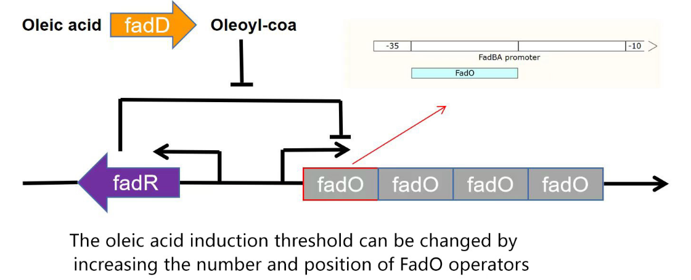
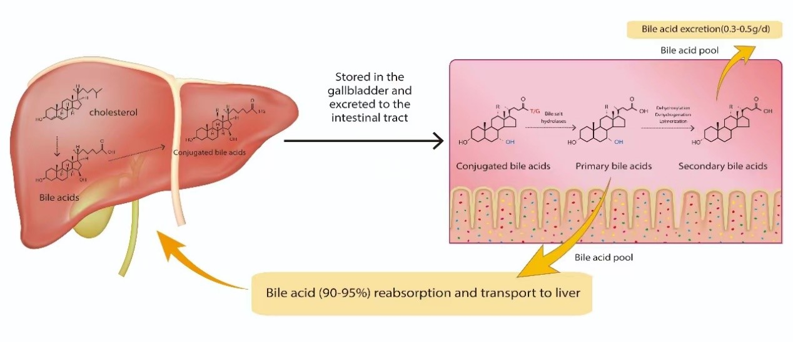
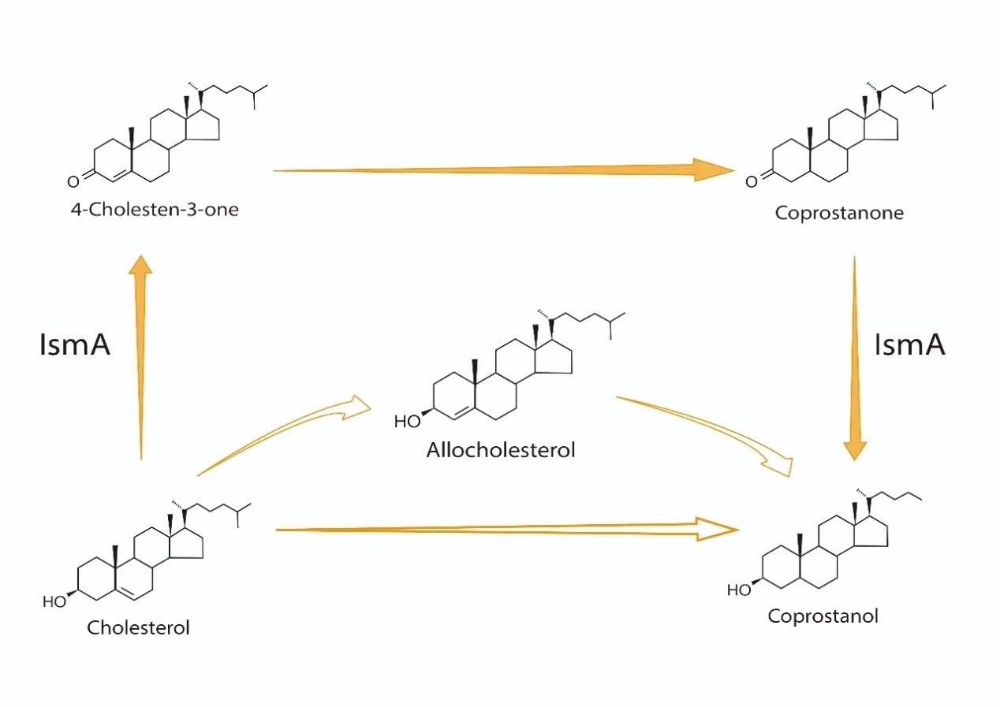
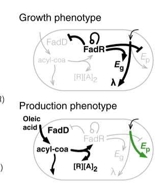

Design
Objectives
This project aims to develop an intelligent cholesterol regulatory system to produce a transformative hypercholesterolemia prevention program. By screening the best matching oleic acid concentration threshold and the optimal combination of cholesterol degradation genes to meet the cholesterol intake needs of people with different constitution.
Oleic acid inducer
By modifying the FadO operator sequence in the promoter sequence, we can change the threshold of oleic acid concentration that can cause the expression of the promoter. Through the verification of experiments and modeling plates, we can obtain the appropriate induction threshold interval, by matching the content of oleic acid in high fat diet defined according to different human constitution. We can design cholesterol-degrading strains based on the principle of oleic acid inducer to adapt to different human needs in the enteral nutrition environment.

IsmA
The IsmA gene is involved in the first and last steps of cholesterol conversion by encoding a hydroxysteroid dehydrogenase (HSD). Eubacterium coprostanoligenes (ATCC 51222) is the only publicly available coprosterol-producing strain. The gene ECOP170 of this strain is homologous to the IsmA gene.

BCoAT
The BCoAT gene regulates cholesterol levels in five ways by producing the by-product short-chain fatty acids.
1.SCFAs inhibit cholesterol synthesis by down-regulating the transcription factor sterol regulatory element binding protein 2 (SREBP2) and reducing the rate of cholesterol synthesis by acetyl-coa.
SCFAs up-regulate cholesterol 7α-hydroxylase (CYP7A1) and promote the conversion of cholesterol to bile acids, thereby reducing cholesterol levels.
SCFAs affect cholesterol absorption in duodenal cells by down-regulating NPC1L1 and up-regulating ABCG5/8.
Butyrate in SCFAs can regulate ABC transporter A1 (ABCA1) to accelerate cholesterol efflux from macrophages.
SCFAs interact with G protein-coupled receptors (GPR41/43) to stimulate the production of leptin and down-regulate SREBP2, thereby inhibiting cholesterol production.

BSH
The BSH gene produces bile saline hydrolase, which lowers cholesterol levels (indirectly) in two main ways:
1. Unconjugated bile acids produced by enzymatic catalysis have higher hydrophobicity and lower solubility, and their flow to the intestine is reduced
2. Promote the excretion of bile acids in the stool.
These two processes result in a decrease in the circulating pool of bile acids in the gut, which promotes the conversion of cholesterol to bile acids and, in turn, lowers cholesterol levels.

Directed evolution
We searched for appropriate oleate induction intensity by mRFP fluorescence intensity indication, and calibrated the oleate induction interval corresponding to different numbers of FadO operators, and screened the promoters and strains with the required number of FadO operators through the determined experimental values.
Due to the complexity of the experimental process of modifying the number of operators, we also borrow modeling methods to assist us in predicting the appropriate data.
In addition, for functional genes, we recombined several genome forming strains, and tested the expression of individual genes in multiple genomic types, and compared their expression with the presence of individual genes. We plan to conduct in vivo experiments in mice to detect the reduction of total cholesterol in vivo. Finally, the most dominant downregulated cholesterol genotype was obtained by comparative screening.
In addition, we also used glucose-depleted M9 medium to acclimate the cholesterol degrading capacity of the strains.
test
The expressed proteins of each gene were purified and confirmed by gel electrophoresis.
Model establishment and prediction
We set up a linear model of cell growth and calculate the formula for simulating cell growth. Then we established the oil acid induction model, using the hill function and the michaelismenten equation, giving the respective mathematical expression, and then using the constant differential equation model to establish the basic model. In the calculation of the model parameters, we calculated the mathematical formula between the fluorescence luminescence intensity and the strength of the oleic acid inducer, and we calculated the various parameters that were needed in the model, and we modified the threshold of the promoter's startup through the change of the number of the promoter. In order to verify the content of each reactant and to find the parameters that affect the whole model, we analyze the stability of each reactant, and adjust the parameters to see the effect of the parameters on the whole model.
References:
[1] Sellés, V. L., Isalan, M., Heap, J. T. & Ledesma-Amaro, R., A primer to directed evolution: current methodologies and future directions. RSC CHEM BIOL 4 271 (2023).
[2] Otten, L. G. & Quax, W. J., Directed evolution: selecting today's biocatalysts. Biomol Eng 22 1 (2005).
[3] Chartrain, M., Salmon, P. M., Robinson, D. K. & Buckland, B. C., Metabolic engineering and directed evolution for the production of pharmaceuticals. CURR OPIN BIOTECH 11 209 (2000).
[4] Virani, S. S. et al., Heart Disease and Stroke Statistics-2021 Update: A Report From the American Heart Association. CIRCULATION 143 e254 (2021).
[5] Goldstein, J. L. & Brown, M. S., A century of cholesterol and coronaries: from plaques to genes to statins. CELL 161 161 (2015).
[6] Song, Y., Liu, J., Zhao, K., Gao, L. & Zhao, J., Cholesterol-induced toxicity: An integrated view of the role of cholesterol in multiple diseases. CELL METAB 33 1911 (2021).
[7] Ray, K. K. et al., World Heart Federation Cholesterol Roadmap 2022. GLOB HEART 17 75 (2022).
[8] Lamb, Y. N., Rosuvastatin/Ezetimibe: A Review in Hypercholesterolemia. AM J CARDIOVASC DRUG 20 381 (2020).
[9] Antharam, V. C. et al., An Integrated Metabolomic and Microbiome Analysis Identified Specific Gut Microbiota Associated with Fecal Cholesterol and Coprostanol in Clostridium difficile Infection. PLOS ONE 11 e148824 (2016).
[10] Kenny, D. J. et al., Cholesterol Metabolism by Uncultured Human Gut Bacteria Influences Host Cholesterol Level. CELL HOST MICROBE 28 245 (2020).